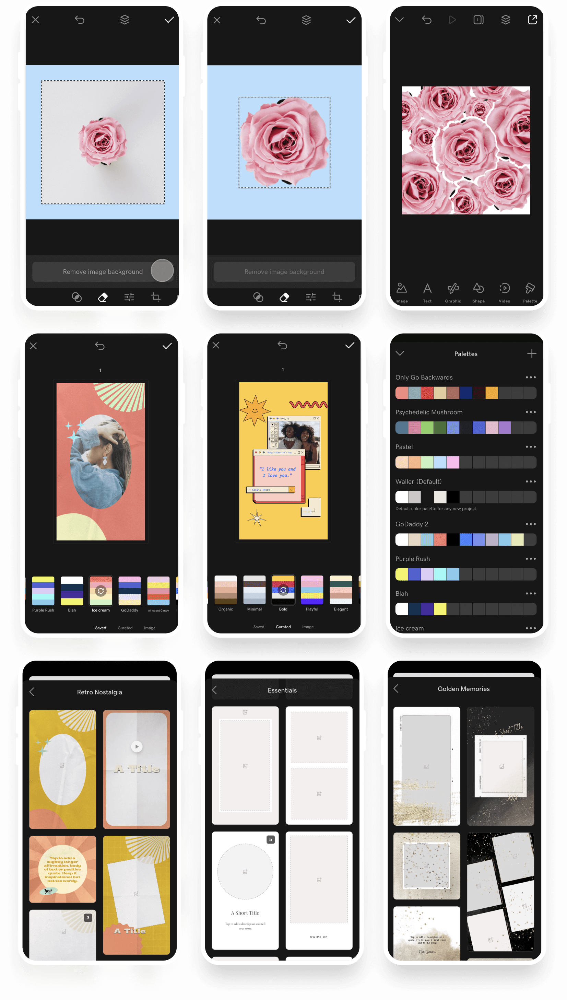

GoDaddy Studio is a content creation app that empowers everyday entrepreneurs to design distinctive and creative social media content with ease. I have been a member of the Product team since March 2017 when the app was known as "Over". Over was acquired by GoDaddy at the beginning of 2020 and has since become an integral part of the GoDaddy suite of products for small business owners wanting to establish a presence online.
My Role
"I believe the core purpose of a Product Manager is to create sustained focus and clarity for teams developing the product."
Some of you may believe in a different purpose – like delivering business impact or helping to create products that people love. Those are certainly not untrue, but I believe those things are requirements of the above purpose. Because in my experience, a team of talented designers and engineers that have focus and clarity WILL deliver those things. And providing that focus and clarity is loaded with responsibilities including stakeholder buy-in, team buy-in, big-picture thinking, opinionated yet collaborative decision-making, data-backed and validated decision-making, evangelistic communication and being able to say NO to many people — these are some of the things I have learned to do, and continue to learn to do better.
As a Senior Product Manager at GoDaddy I lead a cross-functional, fully remote team of 10+ engineers and designers focused on the core creative experience of GoDaddy Studio. I am responsible for the vision and strategy for this area of the product, user experience guidance and project management, roadmaps, team processes and alignment, release planning and post-release data analysis – all across multiple platforms including iOS, Android and Web.
My role has grown in responsibility and complexity as the product has scaled from iOS-only to a fully cross-platform solution. Suffice to say, it has become a highly complex product within the years I have been with the company, and as a manager of that product I have certainly grown with it.
Select Work
Below is a selection of projects I've largely contributed to as a Product Designer or Product Manager for GoDaddy Studio. As a Product Designer at heart, I sketch a lot and I love paging through my journals to see all the things I've imagined over the years...
Strategic Initiative: Video
Problem Space: Customers struggle to stand out on social media. Observation: Video is the most impactful and engaging format for standing out on social media. It's also difficult to create with existing apps. Opportunity: Make it easier and simpler to create an impactful video for social media. Features: Video Layers, Pages, Multi-scene Preview, Multi-scene Export.
Strategic Initiative: Automation
Problem Space: Customers don't have a lot of time to spend designing content for social media due to running their own business. Observation: Many tasks in our app are manual — time could be saved by automating time-consuming manual tasks. Opportunity: Make it quicker to remove a background, change colour combinations, and use templates. Features: Remove Background, Automated Colour Palettes, Dynamic Templates (Layouts).

Strategic Initiative: Discover
Problem Space: Customers don't know what content to create for social media. Observation: If customers had more ideas, they'd be able to know what to make and create more content more often. Opportunity: Share content ideas for our customers on a regular basis as inspiration. Feature: Discover – a feed of stories aimed at helping customers with ideas of what to create.